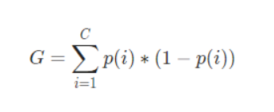
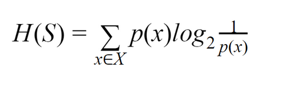
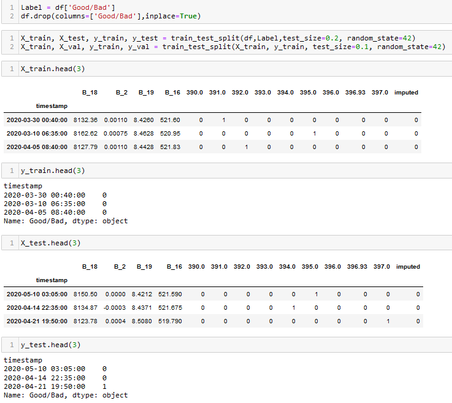
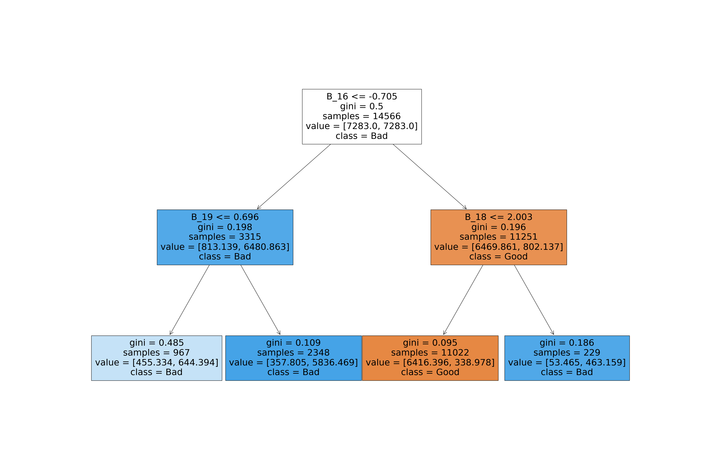
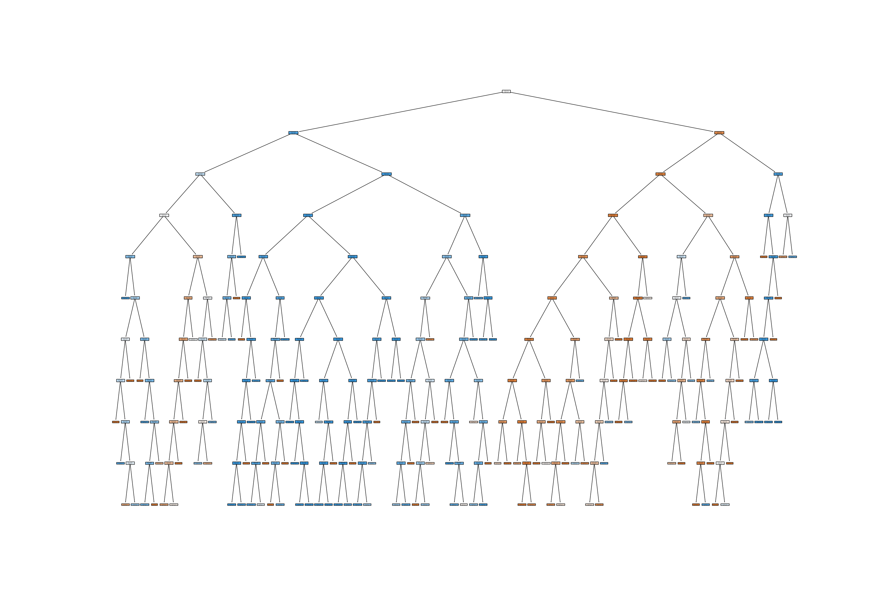
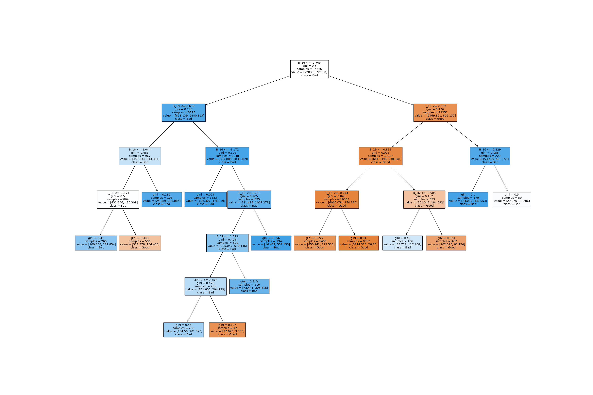

Decision Trees
Overview
As the name suggests Decision tree builds classification or regression models in the form of a tree structure. It breaks down a data set into smaller and smaller subsets with the aim that the subset will have data points from a single class.
How do we train it?
The traning process of a decision tree is heavily influenced by the process of creating the splits, that is how we subset the data is actually responsible for the quality of predictions. A decision tree is built top -down from a root node and involves partitioning the data into subsets that contain instances with similar values. The question arises on basis of what feature and its values, the data shall be split. This decision is made using the metrics such as Entropy and Gini.
These metrics are used to evaluate the the randomness/impurity in the data. Lesser is the randomness, better is the traning process. But why are we chasing for pure/homogeneuos nodes? With this criteria decision tree is able to do reasonable splits. Since having a perfect decision tree is not practically possible, having this metric helps us to steer the splitting in such a direction that will help us learn the non-linerity of the data, and finally make accurate predictions.
Metrics
- Gini
- Entropy
The Gini Index or Gini Impurity is calculated by subtracting the sum of the squared probabilities of each class from one. It favours mostly the larger partitions and are very simple to implement. In simple terms, it calculates the probability of a certain randomly selected feature that was classified incorrectly. The Gini Index varies between 0 and 1, where 0 represents purity of the classification and 1 denotes random distribution of elements among various classes. A Gini Index of 0.5 shows that there is equal distribution of elements across some classes.

Entropy, also called Shannon Entropy, is the measure of the amount of randomness or uncertainty in the data.
It is denoted by H(S):

The purpose of Entropy is same as Gini.
After building the tree, it's performance shall be checked on a testing data. Each data point is goes through whole tree starting at the root node. This means, that according to the features of the data point, the logic upon which the splits are created will direct the data point in a particular direction. After recursively traversing the nodes, the data point shall finally arrive at a leaf node (pure node). The class of the pure nodes is then given as an output for the data point. This processs is similar to traverse a chain of if-else logical blocks.
Data Preparation
Given that Scikit-Learn only allows numerical data for Naive-Bayes, the following data is used for the classification task:

From the above image we can observe that the data is in numerical format. Apart from that, the data is split into splits using train_test_split function. This function splits the data randomly, where a specific percentage of data points are partitioned as training set and the rest as testing. From the training set, a small parition is seperated for validation. By default, this function chooses points without replacement. Here is the dataset to be used for classification.
Code
The code for classification tasks can be found here.
Results
The Decision Tree classifier is run three times with different set of hyperparameters.
Iteration 1

Iteration 2

The tree size for this iteration was very large, due to absence of pruning.
Iteration 3

Conclusions
From the confusion matrices it is clear that the third classifer performance is the best in terms of having least number of false positives and having the highest accuracy. From the above results we can conclude that with 77% accuracy we can detect a bad cycle, that is, we can predict before hand if a furnace requires maintenance with 77% accuracy.